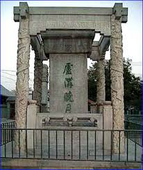
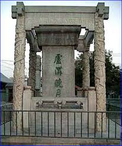
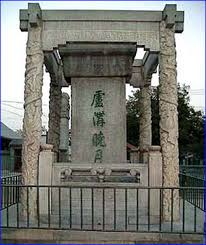

2006/3/10 0:47:02

老帖
今天，被所有西方国家期盼的“央行改革人民币汇率形成机制
调整对美元价格”最终出台；今天，公元两千零五年七月二十一日，将在历史上被这样记住：中国货币战争中的“七七”事变。
历史永远由短视构成，就像波动来自冲动。但正像冲动不可能构成大的真正大周期意义上的波动，短视也只能构成历史的表象，历史也因此也成为对短视的嘲笑。
回顾历史往往是毫无意义的，历史的重复如果真能被重视，历史就不会再有悲剧。悲剧是相同的，但构成悲剧的人和事件永远不同。而每一个人都自以为自己在看戏，谁又不是那戏中人？
而任何事件是偶然的又是必然的，没有什么真正的事件不是由别人野心、阴谋促成的。现在香槟可以开启了，但中国人的历史与香摈无关。然而，中国人的未来从此将与香摈永远相连，这最终也将成为历史，而历史从来都是笑话。
我们最终可以买到便宜的汽车了，但汽车装不了13亿的中国人；我们最终可以八国、九国集团了，但这和中国又有什么关系？历史只相信，世界上没有免费的午餐，出来混的都是要还的。
世界全球化资本体系可以欢呼天堂了！但世界依然世界，世界是什么？至少，世界永远不会是天堂。当我们成为了世界工厂，世界市场后，我们今天终于成为世界共同繁荣的一部分。同一个世界，同一个梦想，今晚，世界大同！！
中国终于世界了，但世界还能中国吗？